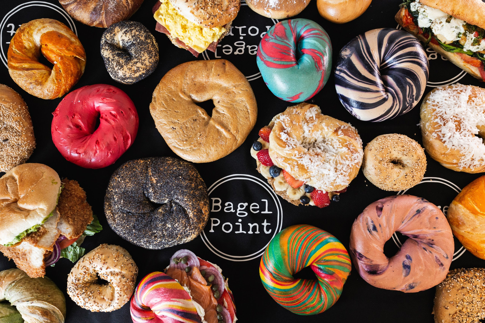

Classic Choices
NYC bagel shops offer many types of bagels. Some of the most popular are plain, sesame, poppy seed, cinnamon raisin, salt, and everything bagels. The everything bagel is especially well known because it combines many toppings into one. Different bagel flavors work better with different spreads and sandwiches, which is part of what makes bagel culture in New York so interesting.
